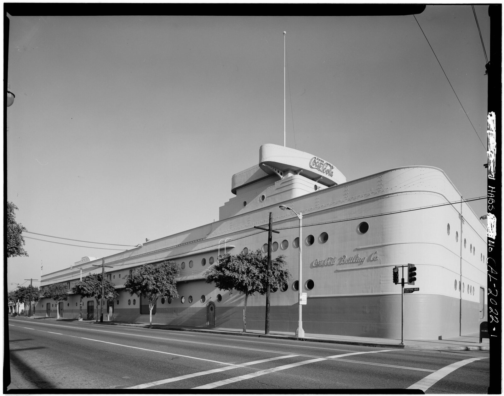

References / Architecture / 143
Coca-Cola Building, Los Angeles
Robert V. Derrah wrapped five industrial buildings in one ocean-liner facade for the Coca-Cola bottling plant on Central Avenue.
- Source
- Library of Congress: HABS CAL,19-LOSAN,31, Coca-Cola Bottling Company
- Creator
- Robert V. Derrah
- Made
- 1939 (Wikipedia)
- Style
- Streamline Moderne (agent-proposed, not yet reviewed by a person)
- Moods
- Nautical, streamlined, commercial
- Evidence
- Downloaded and inspected the Historic American Buildings Survey general view (HABS CAL,19-LOSAN,31-1, taken between 1972 and 1977) through its Commons copy at 1920 px.
- Reviewed
- Rights
- Open license, stored. License: public domain. Rights policy
Context
Robert V. Derrah designed a Streamline Moderne facade in 1939 that joined five existing industrial buildings; the building mimics an ocean liner with portholes, a catwalk, and a bridge. It is Los Angeles Historic-Cultural Monument No. 138, designated 5 February 1975. Wikipedia).
Observed
- The block runs the full length of the street as one smooth white hull with a fully rounded corner.
- Rows of round portholes of two sizes pierce the wall; some are grouped in pairs and threes.
- Horizontal lines of rivets and two thin raised bands sweep along the wall and curve around the corner.
- A darker band forms the base, like a waterline.
- On the roof, a stepped bridge carries a flat oval sign with the Coca-Cola script.
- A door with a rounded top, shaped like a ship’s hatch, sits in the wall. Script lettering “Coca-Cola Bottling Co.” is the only other sign.
Why it belongs
The building uses streamlining as a brand image: a factory turned into a ship suggests speed, cleanliness, and modernity. The long flat wall shows how repeated portholes and a few parallel bands carry a large surface without ornament.
Borrow
Carry a long panel with only a few parallel horizontal rules and a row of circles; round one end.
Use a darker base band under a light surface, like a waterline.
Measured
Machine-extracted by tools/image-traits.py on . Full measurement.
- Mean chroma
- 0
- Palette
- #888888 18%
- #a4a4a4 14%
- #787878 12%
- #c4c4c4 10%
- #575757 9%
- #b6b6b6 6%
- #636363 6%
- #959595 6%

